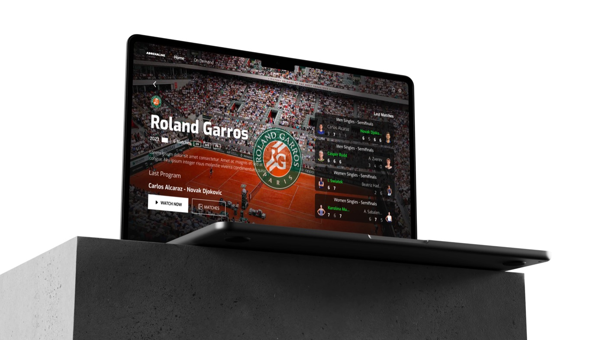
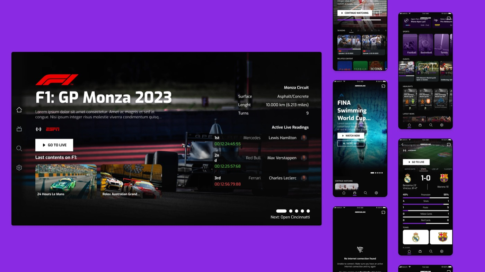
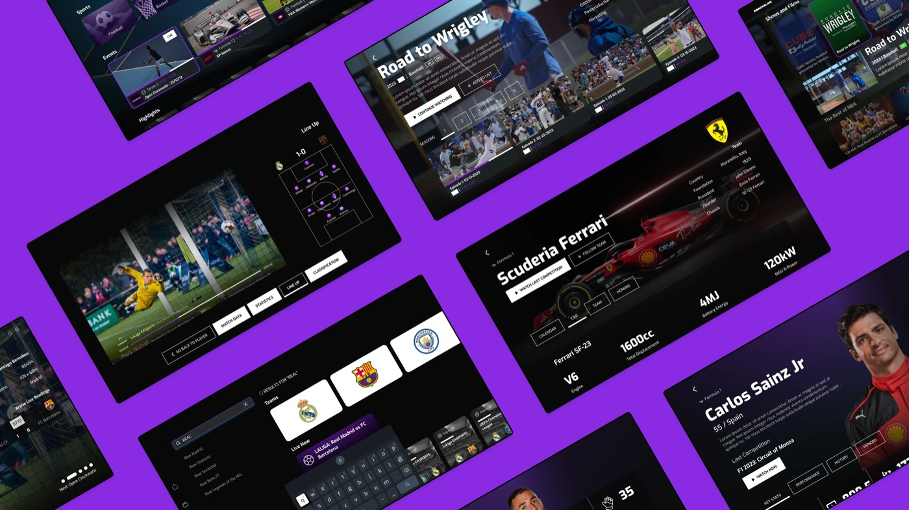
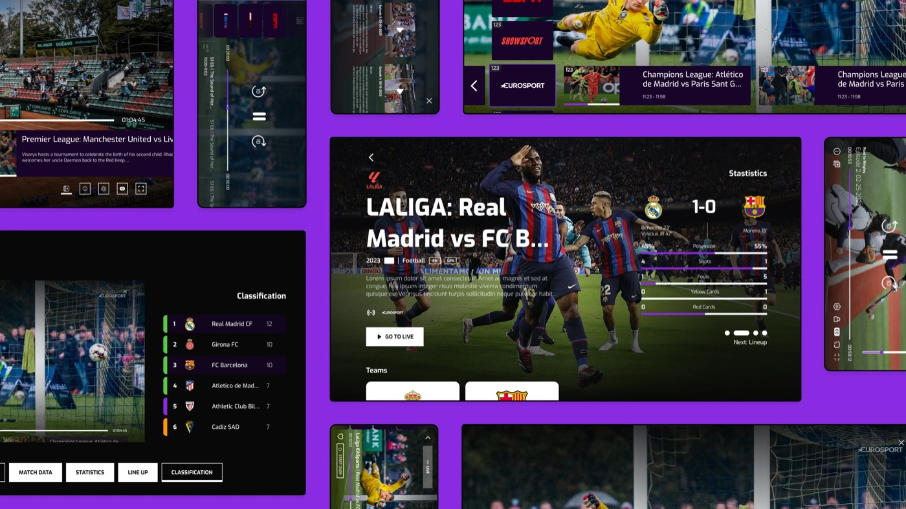

Adrenaline surgió de la necesidad de alinear nuestro producto insignia con el panorama cambiante de los eventos deportivos. El cliente buscaba adaptar su backend flexible, distinto para cada proveedor externo, a una interfaz que conectara con una audiencia exigente, ávida de contenido deportivo completo. El foco en un MVP buscaba resolver el reto de adaptar estadísticas y resultados de deportes muy distintos entre sí, dadas sus diferencias en sistemas de puntuación y formatos de competición.
Nuestro enfoque partió de crear un MVP mediante dos esquemas predominantes: competiciones individuales y competiciones por partido. Esta decisión estratégica permitió abordar necesidades cambiantes y resolver retos alejándose del "camino feliz" convencional. El producto final adapta sin fricción el esquema de un servicio de streaming, incorporando funciones de referencia de servicios deportivos como DAZN en una interfaz competente y atractiva.
Lo mío concretamente fue estandarizar el UI kit: construir componentes reutilizables, con propiedades que se pudieran combinar. No trabajábamos aún con tokens, pero ya teníamos estilos consistentes que nos dejaban evolucionar el proyecto con agilidad, y conseguimos que dentro de Figma se pudiera cambiar colores y marca de forma mucho más efectiva que antes. La evolución de este proyecto fue más técnica que visual: al venderse como producto white-label, lo que más aporté fue velocidad y presentación de cara al cliente — planteamos componentes para probar cómo funcionaban a nivel de frontend, una conversación que hasta entonces ni siquiera habíamos podido tener.


La flexibilidad, escalabilidad y facilidad de componetización del producto convierten a Adrenaline en una base sólida para futuros clientes del sector del streaming deportivo. Su capacidad de adaptarse a distintos deportes e iterar sin fricciones la posiciona como una solución clave, con una interfaz competitiva que marca el estándar para próximos proyectos del sector.
Honestamente, hace tiempo de esto y no tengo del todo claro por qué se quedó donde se quedó — no hay una razón dramática que recuerde.
Lo que sí tengo claro es hacia dónde iba: el MVP cubría un esquema para competiciones individuales, como el tenis, y otro para competiciones por partido, como el fútbol. Desde ahí el camino natural era seguir escalando a más deportes, cada uno con su formato de puntuación. Simplemente no llegó a construirse más — no porque no se pudiera, sino porque no hubo más que aportar en ese momento.

Este proyecto ha sido revisado para proteger información confidencial, siguiendo los términos de uso justo.
Este proyecto es para un cliente y su contenido es confidencial. Introduce la contraseña para verlo.